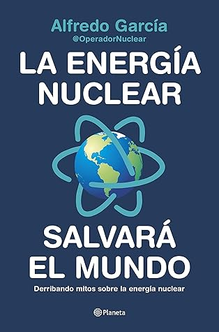

La energía nuclear salvará el mundo: Derribando mitos sobre la energía nuclear
Reseña por Jorge I. Zuluaga

Ver reseña en GoodReads (necesita cuenta)
Cumple con todas las condiciones que creo debe tener un buen libro de divulgación: es ameno (una vez te "enchufás" no hay forma de "desconectarte"); está muy bien escrito; tiene picante, ironía y humor; trata de un tema relativamente desconocido y, muy a menudo, lo hace con un enfoque novedoso; está lleno de datos curiosos; y, lo mejor, te deja esa sensación deliciosa de "¿uy!, ¿yo por qué no sabía esto?".
El inicio de mi "apasionada relación" con la energía nuclear (es decir, el momento en que me convencí de sus poco divulgadas bondades, al punto de convertirme en un "activista íntimo" con amigos, familiares, estudiantes y, más recientemente, en redes) ocurrió hace unos 6-7 años cuando descubrí el largometraje documental "Pandora's Promise" (¡tienen que verlo! https://www.youtube.com/watch?v=ObcgG...).
Los creadores de ese documental logran también lo que Alfredo García (@operadornuclear, como lo conocemos todos en redes) hace en este libro: desmitificar la energía nuclear y exponer claramente sus ventajas OBVIAS y la injusta satanización de la que ha sido objeto por décadas debido, principalmente, a la irracional radiofobia humana.
Mi entusiasmo por el documental "Pandora's Promise", sin embargo, estuvo matizado y moderado siempre por un cierto escepticismo, producto del hecho de haber visto un documental con una calidad similar en la primera década de los 2000, que también causó un gran impacto en mí, pero que defendía la hipótesis (incorrecta) de que el Sol podría jugar un papel fundamental en el calentamiento global (y, de paso, negaba el papel preponderante de nuestra especie).
Naturalmente, las conclusiones de ese documental terminaron a la larga siendo incorrectas y me avergüenzo de lo mucho que "cacareé" en ese entonces con aquel tema. Después de eso, no quería equivocarme otra vez defendiendo con pasión algo que no conocía tan bien.
Después de leer este libro me doy cuenta de que "Pandora's Promise" (¿ya les dije que tienen que verlo?) no ha perdido ni una pizca de certeza, interés y actualidad.
El tema de la energía nuclear y la apasionante ciencia que tiene de fondo (¡¿a quién podría no apasionarle que algo tan mundano como la producción de energía eléctrica tuviera que ver con protones, neutrones, fuerza débil, procesos nucleares, etc.?!) debería ocupar más titulares en los medios, tanto técnicos como tradicionales.
¿Cómo es posible que los avances —qué digo avances, la ciencia y técnica básica asociada a la más estable, eficiente y limpia (¡sí!, ¡limpia!) fuente de energía— sean tan solo una curiosidad que apenas conocen las personas que trabajan en el sector y uno que otro "aficionado pasional"? De cara a un futuro climático y energético muy incierto, ¡esto lo tendría que saber todo el mundo!
Por eso me encanta cuando Alfredo responde a sus críticos en Twitter que le dicen que él hace parte del "lobby" nuclear, a lo que responde con toda certeza (y con la ironía típica de esta red): "yo no hago parte del lobby nuclear, yo soy el lobby nuclear".
Y es que eso es lo que necesitamos: más "lobby" nuclear.
"Conocí" a Alfredo en Twitter por los días del estreno de la espectacular serie "Chernobyl" de HBO en junio de 2019. Una serie que, como él, vi con un poco de recelo, pensando que solo conseguiría acrecentar los miedos irracionales hacia la energía nuclear (afortunadamente no lo hizo realmente y, al contrario, la puso otra vez en la boca de todos para bien).
Empecé a seguir con algo de sorpresa sus publicaciones (en verdad nunca creí que alguien pudiera trinar sobre algo tan impopular como la energía nuclear y aun así tener una buena aceptación en las redes; aunque, como él dice, no faltan una buena cantidad de "haters").
Después de casi un año de seguir sus publicaciones he aprendido mucho de él y de tecnología nuclear, de la que creía saber un poco. Pero poder leer en un libro una versión organizada y ampliada de muchas de las cosas que ha compartido en Twitter ha sido verdaderamente excitante.
Les confieso que cuando salió el libro y pedí mi copia, pensé que me encontraría simplemente con un buen libro de ciencia y tecnología nuclear que repetiría algo de lo que creía saber más que el común de la gente (soy físico, vi cursos de física nuclear como parte de mi formación y he dictado bastantes lecciones del tema, especialmente por su relación con la astrofísica).
Ahora reconozco que en realidad fui demasiado pretensioso al creer que sería un libro sin muchas novedades para mí.
Ha sido mucho lo que el libro me ha enseñado, cosas que, incluso como físico, no sabía sobre la tecnología nuclear. Agradezco a Alfredo que lo haya escrito y espero que sirva para "alfabetizar" también a otros que, como yo, nos las damos de sabiondos. Ahora solo quiero aprender mucho más del tema, porque sé que en el futuro alguien me preguntará creyendo que sé más de la cuenta.
El libro está muy bien organizado. Los temas se suceden naturalmente uno después de otro. Cada "capítulo" (el libro tiene 41) se lee en un par de minutos, de modo que se puede usar como libro para llevar a cualquier parte o para tenerlo en la mesa de noche (aunque yo, personalmente, preferí devorarlo en dos sentadas; no quería perderme de nada).
Me encanta el picante y el humor de Alfredo. Eso hace el libro doblemente atractivo porque "trivializa" (no en mal sentido), usando comentarios jocosos (algunos con un contenido político e irónico muy interesantes) y referencias a la cultura popular, temas que de otro modo serían muy densos.
Para mí fueron muy ilustrativos los capítulos dedicados a describir el proceso de formación y selección del personal que trabaja en el sector nuclear, las estrictas medidas de seguridad de la industria y, en general, la gran cantidad de detalles técnicos sobre el mundo, para la mayoría de nosotros misterioso y desconocido, del interior de una central nuclear. Por ejemplo, es genial la descripción que hace del interior de las torres de intercambio de calor —esas estructuras de casi 50 pisos que todos asociamos solamente con las centrales nucleares, y que Alfredo llama de forma genial "fábricas de nubes"—. ¡Quiero estar en una de ellas!
Las dos últimas partes, "Perspectivas" y "Soluciones" (capítulos 32 a 41), son, para mí, las más pertinentes de todo el libro (obviamente hay que leerlas después de haber entendido el resto).
Esos 10 capítulos finales prácticamente deberían ser lectura obligada en las universidades y colegios. Allí están las ideas bien explicadas del verdadero potencial e impacto de la energía nuclear en los acuciosos problemas energéticos que enfrenta nuestra especie.
Solo una cosa no me gustó del libro.
Leyendo los agradecimientos encontré que Alfredo ha tenido relación con la crema y nata de la divulgación científica española, de la que ahora hace parte (para mí, entre las mejores del mundo y, afortunadamente, en nuestra propia lengua).
Allí descubrí el nombre de divulgadores a los que respeto y admiro mucho: Francisco Villatoro y Antonio Martínez Ron, para citar dos nombres de los grandes.
Sabiendo eso, me hubiera encantado (y creo que habría sido más acertado) que cualquiera de ellos escribiera el prólogo de este buen libro.
La elección de Javier Santaolalla, un popular divulgador, físico de partículas y "YouTuber" (que es donde ha realizado la mayor parte de su actividad divulgativa) para esta importante labor me pareció un poco desacertada. El prólogo está escrito en "código YouTuber" (con mucho énfasis en la cultura popular de los superhéroes, algo que puede ser del agrado de los jóvenes y de adultos aficionados, pero para nada apropiado para este libro) y a mí personalmente no me gustó.
No soy nadie, sin embargo, para calificar esta elección, pero conjeturo que puede funcionar para atraer a las nuevas generaciones (pero también podría repeler a las viejas).
Ahí les dejo la inquietud. Lean el libro y entenderán de lo que estoy hablando (o posiblemente no lo entenderán y creerán que exagero, pero a mí me pareció).
En síntesis: la energía nuclear salvará el mundo y Alfredo García, a través de este libro, habrá contribuido con su granito de arena para que esto seguramente pase.